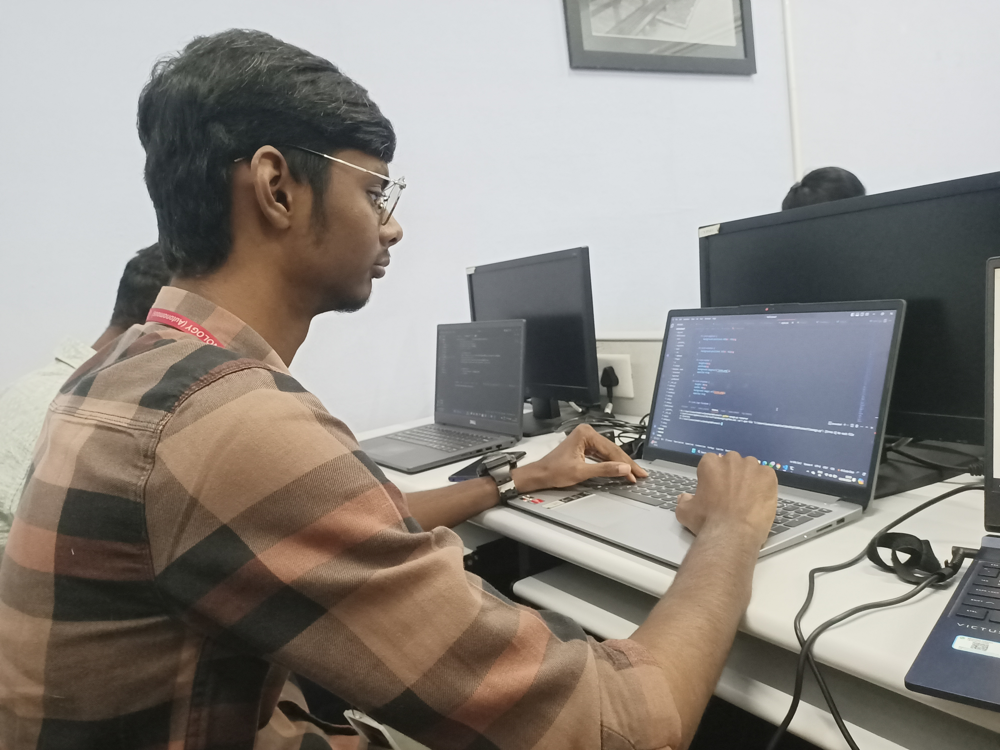
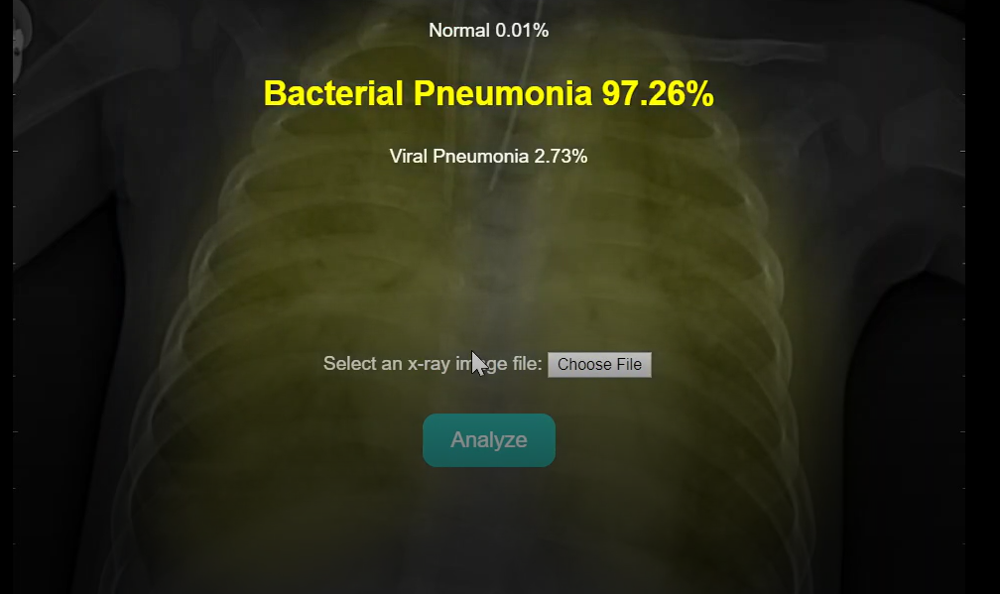

HEMA HARSAN RA Software Engineer |
Contact Information
LINKED IN: HEMA HARSAN R |
 Phone: 9787832240
Phone: 9787832240 Address: 1/198 Main Road Chinnadharapuram, Karur, Tamil Nadu
Address: 1/198 Main Road Chinnadharapuram, Karur, Tamil NaduAbout Me
I am currently studying my B-TECH in Artificial Intelligence and Data science at N.G.P Institute of Technology, Coimbatore, Tamil Nadu. My passion for technology has led me to become a software developer. I am a motivated individual with a background in Electrical and Electronics Engineering, specializing in artificial intelligence and data science. I have strong skills in programming languages such as Python and frameworks like Django, which enable me to solve complex problems effectively.
Education
SSLC:
- Bharathi Vidyalaya Metric Higher Secondary School, Karur, Tamil Nadu
DIPLOMA:
- EEE - Nachimuthu Polytechnic College, Pollachi, Tamil Nadu
B-TECH:
- AI & DS - N.G.P Institute of Technology, Coimbatore, Tamil Nadu
Skills
Programming Languages:
Tools:
Frameworks:
|
Achivements
|
Internship Experience
Intern in Pinesphere Solutions
During my internship at Pinesphere Solutions, I had the opportunity to immerse myself in full-stack development using Django. I gained hands-on experience in both front-end and back-end technologies, which enhanced my understanding of web application architecture.
Key Responsibilities:
- Developed interactive web applications using Django, HTML, CSS, and JavaScript.
- Assisted in database management and API integration to ensure seamless data flow.
- Collaborated with team members to tackle complex issues and develop efficient solutions.
- Continuously improved and maintained the codebase to maintain high quality and efficiency.

Projects
1. Pneumonia Detection Using Random Forest
Developed a machine learning model to detect pneumonia from chest X-ray images using the Random Forest algorithm. This project aimed to assist in early diagnosis and improve healthcare outcomes.
Key Contributions:
- Data Collection: Gathered and pre-processed a dataset of chest X-ray images to ensure high-quality input for the model.
